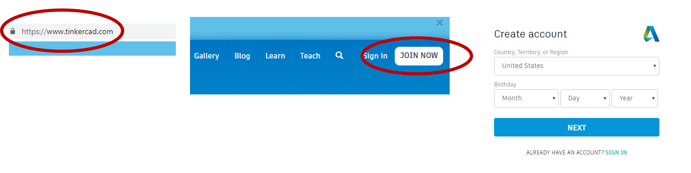
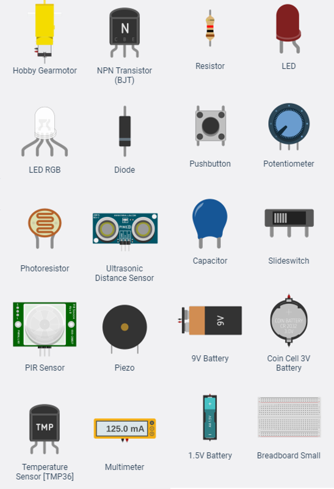
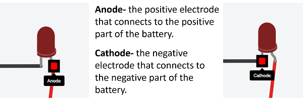
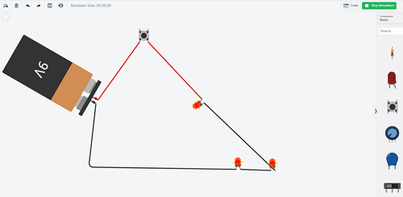
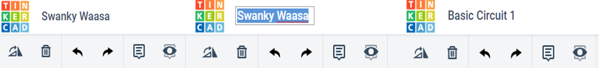
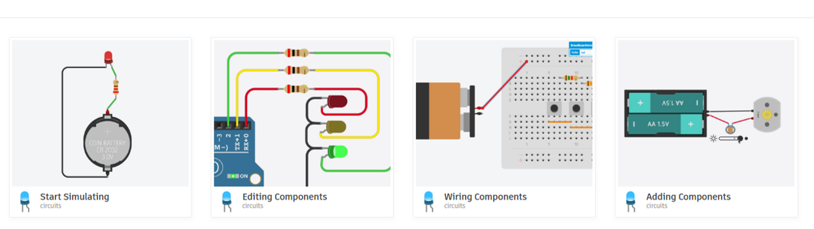

Tinkercad Circuits is a section of the 3D design website Tinkercad, that allows you to design, build, and test a circuit. In Tinkercad Circuits you can choose different power sources, switches, and resistors and test how they work together. Tinkercad Circuits also allows you to export your circuit to print on a 3D printer.
Log into Tinkercad. If you do not already have an account, click the join now button and set up an email and password for your account. Create a login and password you will remember, this will be necessary to save your work and share your designs with others.

Tinkercad Circuits has several different types of components you can use in your circuit design. Components are parts you can add to your circuit. Energy to power your circuit can be added with different types of batteries including 9V and coin cells. Lights, motors, and displays can be added to your circuit as well as different types of switches to control them. You can add instrument components including a multimeter and oscilloscope which can be used to measure and show how much electricity is being used.

While you have the ability to change the colors of the connecting wires to any color, in most cases, black is used to show negative and red the positive when it comes to hooking up connecting wires. Use the color coded wires to help you keep your circuit organized.

Many of the components have specific ways they hook up to the wires and batteries to make them work. For example, when adding an LED you will have to hook up the anode (curved side) to the wire connecting to the positive (+) part of the power source and the cathode (straight side) to the wire connecting to the negative (-) part of the power source.
Use the "Start Simulation" button to test your circuit. If the resistors in your circuit such as the light or motor do not work during the simulation, try moving components around.

Tinkercad will automatically save your creations and when you log in you will be able to see all the circuits you have built. Tinkercad Circuits will also automatically name your circuit project. If you would like to give it your own name, just click on the name in the top left corner and change it.

Tinkercad Circuits has four tutorials you can use to start your circuit design. The tutorials are made to help you find tools to build your circuits and practice testing the circuits with the "Start Simulation" button. Work your way through the simulations. Each simulation will give you important directions and information on the left hand side of the screen.

If you still need help designing a circuit, start with a pre-built circuit. You will find a bunch of different pre-built circuits under "Starters." You can practice copying these pre-built circuits or observing how the circuit works by pushing the "Start Simulation" button.